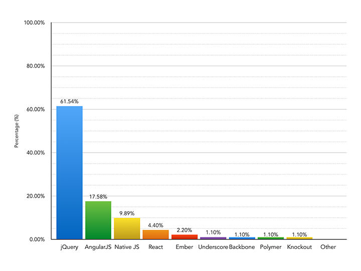
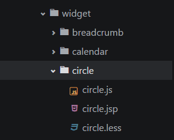

自2013年5月份facebook将React开源以来，截至目前已经在github上收获了超过3万个star。
衍生的React Native项目（andriod和ios版本）也在今年9月份完成发布。
React是一个用于构建用户界面的JavaScript库，而不是一个MVC框架，但可以使用React作为MVC架构的View层轻易的在已有项目中使用。
如果想参与angular大法好还是react大法好的讨论大战的话，请移步知乎
高效DOM渲染
以前没有ajax技术的时候，web页面从服务端整体render出html输出到浏览器端进行渲染，同样的，用户的一个改变页面的操作也会刷新整个页面来完成。直到有了ajax出现，实现页面局部刷新，带来的高效和分离让web开发者们惊叹不已。但随之而来的问题是，复杂的用户交互及展现需要通过大量的DOM操作来完成，这让页面的性能以及开发的效率又出现了新的瓶颈。
时至今日，谈到前端性能优化，减少DOM元素、减少reflow和repaint、编码过程中尽量减少DOM的查询等手段是大家耳熟能详的。而页面任何UI的变化都是通过整体刷新来完成的。幸运的是，React通过自己实现的DOM Diff算法，计算出虚拟页面当前版本和新版本之间的差异，最小化重绘，避免不必要的DOM操作，解决了这两个公认的前端性能瓶颈，实现高效DOM渲染。
备注：以下性能阐述参考自尤雨溪。
对于React的性能方面，想啰嗦几句：
组件化
在业务开发中，遇到公共的模板部分，我们不得不将模板和规定的数据格式耦合在一起来实现组件。而在React中，我们可以使用JSX语法来封装组件，将组件的结构、数据逻辑甚至样式都聚合在一起，更加简单、明了、直观的定义组件。
有了组件化的实现，我们可以很直观的将一个复杂的页面分割成若干个独立组件，再将这些独立组件组合完成一个复杂的页面。这样既减少了逻辑复杂度，又实现了代码的重用。
React认为一个组件应该具有如下的特征：
单向数据流
在React中，数据的流向是从父节点到子节点的单向流动，这样可以使组件简单并且容易把握，因为子节点是无状态的，只需要从父节点获取props渲染即可。这样带来的收益是，顶层组件的某个prop改变了，React就会向下递归遍历整棵组件树，重新渲染所有使用到了这个属性的组件。
单向数据流带来的几个重要的好处是：
React还在持续的更新开发中，截至目前React的最新版是0.14.3版本，每一次的更新意味着API的改变亦或是包的拆解，关注版本的更新让你的代码和思想都跟上节奏。
相比于之前的看不懂的官方文档，现在的中文论坛、文档、学习书籍慢慢完善起来了。可以有几个途径去获得相关的资料：
特别提示：本文的代码示例详见GuoYongfeng/react-demo
越是基础的东西，越是重要；越是原理的内容，越要去理清楚。
我们可以通过以下几种方式来获取React进行使用：
npm install react --save
bower install react --save
目前最新版本是0.14.3，并且还在持续的更新中。先来看一下新版本的React都有哪些改变吧。
0.13版本
react.js
react-with-addons.js
JSXTransformer.js
0.14版本
react.js
react-dom.js
react-dom-server.js
react-with-addons.js
之前的react.js现在已经被分拆为react.js react-dom.js react-dom-server.js三个文件了。
react.js 是 React 的核心库react包提供了一系列的API，以下列举几个常用的：
// 使用ES6的时候可以用这个API来定义一个组件
React.Component
// 创建一个组件类，并作出定义
React.createClass
// 创建并返回一个新的指定类型的 ReactElement
React.createElement
React.cloneElement
// 返回一个生成指定类型 ReactElements 的函数
React.createFactory
// 验证一个对象是否为ReactElement，返回boolean值
React.isValidElement
React.DOM
.....
react-dom.js提供与 DOM 操作相关的接口，以下列举几个常用的：react包提供了一系列与DOM相关的API
// 渲染一个 ReactElement 到 DOM 中，放在 container 指定的 DOM 元素下，返回一个到该组件的引用。
ReactDOM.render
// 从 DOM 中移除已经挂载的 React 组件，清除相应的事件处理器和 state
ReactDOM.unmountComponentAtNode
ReactDOM.findDOMNode
ReactDOMServer.renderToString
ReactDOMServer.renderToStaticMarkup
react-tools 及 JSXTransformer.js 已弃用
以前是采用JSXTransformer来解析JSX语法，现在是全面拥抱Babel（可以npm insttall babel -g安装babel进行JSX语法解析、或是加上babel提供的browser.js库进行解析）。
备注：如果没接触Babel的同学，请移步这里babeljs.io，Babel是一款强大的语言解析器，目前github上已经超过一万个star了，基于babel还可以自定义封装自己的解析器插件。
运行的两种方式
<!DOCTYPE html>
<html>
<head>
<script src="../vendors/react/react.js"></script>
<script src="../vendors/react/react-dom.js"></script>
<!-- browser.js 的作用是将 JSX 语法转为 JavaScript 语法 -->
<script src="../vendors/babel/browser.min.js"></script>
</head>
<body>
<div id="example"></div>
<!-- JSX 语法，跟 JavaScript 不兼容。凡是使用 JSX 的地方，都要加上 type="text/babel" -->
<script type="text/babel">
var MyComponent = React.createClass({
render: function (){
return (
<h1 className="header">我的第一个组件</h1>
)
}
});
ReactDOM.render(<MyComponent />, document.getElementById('example'));
</script>
</body>
</html>
<!DOCTYPE html>
<html lang="en">
<head>
<meta charset="UTF-8">
<title>被解析的JSX</title>
<script src="../vendors/react/react.js"></script>
<script src="../vendors/react/react-dom.js"></script>
</head>
<body>
<div id="example"></div>
<script src="../build/jsx_compile.js"></script>
</body>
</html>
一种可以在React组件内部构建标签的类XML语法。
为什么要发明JSX语法，如果不用JSX，我们可以怎么样定义我们的组件，举两个栗子：
angular.module('expanderModule', []).
.directive('expander', function(){
return {
restrict: "EA",
replace: true,
transclude: true,
scope: {title: "=expanderTitle"},
template: '<div>' +
'<div class="title">{{title}}</div>' +
'<div class="body closed" ng-transclude></div>' +
'/div',
link: function(scope, element, attrs){
// TODO SOMETHING
}
}
})

AND SO ON....
如果使用JSX语法，我们可以如何定义和使用组件
/**
* [createClass description]
* @param {[type]} { render: function( [description]
* @return {[type]} [description]
*/
var MyList = React.createClass({
render: function() {
return (
<ul>
{
this.props.list.map(function (child) {
return <li>{child}</li>
})
}
</ul>
);
}
});
var TagList = [
<a href="#">Facebook</a>,
<a href="#">Google</a>
];
ReactDOM.render(
<MyList list={TagList} />,
document.getElementById('example')
);
/**
* [MyData description]
* @type {Array}
*/
var MyData = ['React', 'is', 'awesome'],
MyStyles = {
color: "#333",
fontSize: "40px",
fontWeight: "bold"
};
ReactDOM.render(
<div style={MyStyles}>
{
MyData.map(function (name) {
return <span>{name} </span>
})
}
</div>,
document.getElementById('example')
);
使用JSX语法来封装组件有什么好处：
// 不要出现类似的错误，style="opacity:{this.state.opacity};"
提示：关于组件化的话题，感兴趣的同学可以继续关注Vuejs、Web components等对组件的写法。随着更为复杂的多端环境的出现，组件标准化还有着更大的想象空间，React的组件定义不是终点，也不一定是标准，但会在组件化的道路上留下深刻de影响。
看以下示例了解如何定义一个组件
// 定义一个组件LikeButton
var LikeButton = React.createClass({
// 给state定义初始值
getInitialState: function() {
return {liked: true};
},
// click事件的处理函数
handleClick: function(event) {
this.setState({liked: !this.state.liked});
},
render: function() {
var text = this.state.liked ? '稀罕' : '讨厌';
return (
<p onClick={this.handleClick}>
我{text}你.
</p>
);
}
});
ReactDOM.render(
<LikeButton />,
document.getElementById('example')
);
或者用ES6定义一个组件
// 使用React.Component来定义组件
class Button extends React.Component {
static displayName = 'Button'
static propTypes = {
children: React.PropTypes.any,
className: React.PropTypes.string,
disabled: React.PropTypes.bool,
onClick: React.PropTypes.func,
once: React.PropTypes.bool,
status: React.PropTypes.string,
style: React.PropTypes.object,
type: React.PropTypes.oneOf(['submit', 'button'])
}
componentWillReceiveProps(nextProps) {
if (nextProps.disabled !== this.props.disabled) {
this.setState({ disabled: nextProps.disabled })
}
}
state = {
disabled: this.props.disabled,
show: null
}
disable(elem) {
this.setState({ disabled: true, show: elem })
}
enable(elem) {
this.setState({ disabled: false, show: elem })
}
handleClick() {
if (this.props.onClick) {
this.props.onClick()
}
if (this.props.once) {
this.disable()
}
}
render() {
let status = this.props.status
if (status) {
status = `rct-button-${status}`
}
const className = classnames(
this.props.className,
this.getGrid(),
'rct-button',
status
)
return (
<button onClick={this.handleClick.bind(this)}
style={this.props.style}
disabled={this.state.disabled}
className={className}
type={this.props.type || "button"}>
{ this.state.show || this.props.children }
</button>
)
}
}
export default Button
三个维度来看待React中数据流
在React中数据的流向是单向的，即从父节点流向子节点，这样就更方便组件的渲染（子组件只需要从父组件获取props渲染即可）
组件内部有自己的状态，这些状态只能组件内部修改，保持独立性
React组件本身很简单，可以把它看成就是一个函数，而这个函数有两个传参，props和state，调用这个函数后悔返回一个虚拟的DOM。
/**
* [Counter]
* @param {Boolean} [description]
* @param {[type]} [description]
* @param {[type]} [description]
* @return {[type]} [description]
*/
var Counter = React.createClass({
// 相当于是规范化的接口文档
propTypes: {
name: React.PropTypes.string.isRequired,
},
// 定义初始化的state
getInitialState: function () {
return { clickCount: 0 };
},
// 定义一个处理点击的回调方法
handleClick: function () {
this.setState(function(state) {
return {clickCount: state.clickCount + 1};
});
},
render: function () {
return (
<div>
<p>{this.props.name}</p>
<h2 onClick={this.handleClick}>
点我点我! <br />被戳次数: {this.state.clickCount}
</h2>
</div>
);
}
});
ReactDOM.render(
<Counter name="myCounter" />,
document.getElementById('example')
);
说明：
我们可以将组件看成是一个状态机，每一个组件都有自己的state，改变组件可以使用setState或是replaceState，千万不要这样类似这样写 this.state.name = "xxx" 。
这是验证props的方式，类似于约定了一个接口文档。
通过props，可以把任意类型的数据传递给组件，当然，还可以使用 ... 来同时传递多个prop
分别是定义初始化props和state值的两个钩子函数，不一样的是，在组件的生命周期中，前者只会执行一次，具体下一部分细说。
父组件通过props来向子组件传递数据
虽然state和prop都是存储数据的，但是要区分二者的区别：
需要提醒的是：
二者的结合则可完成组件的单向数据流动
多个简单的组件嵌套，可构成一个复杂的复合组件，从而完成复杂的交互逻辑，实现页面功能。
// 定义一个头像avatar的组件
var Avatar = React.createClass({
render: function() {
return (
<div>
<ProfilePic link={this.props.link} />
<ProfileLink name={this.props.name} />
</div>
);
}
});
// 定义一个人物图片ProfilePic组件
var ProfilePic = React.createClass({
render: function() {
return (
<img src={this.props.link} />
);
}
});
// 定义一个人物链接ProfileLink组件
var ProfileLink = React.createClass({
render: function() {
return (
<a href={'https://github.com/' + this.props.name}>
{this.props.name}
</a>
);
}
});
// 渲染到容器
ReactDOM.render(
<Avatar
name="GuoYongfeng"
link="https://avatars2.githubusercontent.com/u/8686869?v=3&s=460"
/>,
document.getElementById('example')
);
React为每个组件都提供了简洁的生命周期API，去响应组件在不同阶段（创建时，存在时，销毁时）执行相应的操作，更精确的管理每一个组件。
什么是钩子函数，可以理解为在组件生命周期中某个确定的时间点执行的函数。以下是对钩子函数的总结：
这意味着你可以在这个组件插入到DOM之前都可以调用这些API
var MessageBox = React.createClass({
getInitialState:function(){
return {
count: 0,
}
},
getDefaultProps:function(){
console.log('getDefaultProps');
},
componentWillMount:function(){
console.log('componentWillMount');
},
componentDidMount:function(){
console.log('componentDidMount');
},
componentWillUnmount: function(){
console.log('componentWillUnmount');
},
shouldComponentUpdate:function(nextProp,nextState){
console.log('shouldComponentUpdate');
if(nextState.count > 10) return false;
return true;
},
componentWillUpdate:function(nextProp,nextState){
console.log('componentWillUpdate');
},
componentDidUpdate:function(){
console.log('componentDidUpdate');
},
killMySelf: function(){
// 包括顶级容器一块干掉，当然在实际项目中可别干这样的傻事
React.unmountComponentAtNode( document.getElementById('app') );
},
doUpdate:function(){
this.setState({
count: this.state.count + 1,
});
},
render:function(){
console.log('渲染')
return (
<div>
<h1 > 计数： {this.state.count}</h1>
<button onClick={this.killMySelf}>卸载掉这个组件</button>
<button onClick={this.doUpdate}>手动更新一下组件（包括子组件）</button>
<Submessage count={this.state.count}/>
</div>
)
}
});
var Submessage = React.createClass({
componentWillReceiveProps:function(nextProp){
console.log('子组件将要获得prop');
},
shouldComponentUpdate:function(nextProp,nextState){
if(nextProp.count> 5) return false;
return true;
},
render:function(){
return (
<h3>当前计数是：{this.props.count}</h3>
)
}
});
ReactDOM.render( <MessageBox/>, document.getElementById('app') );
给元素加上
ref="xxx"后，可直接通过this.refs.xxx获取该DOM元素，而不需要使用getDOMNode/findDOMNode。
var converter = new showdown.Converter();
var MarkdownEditor = React.createClass({
getInitialState: function() {
return {value: '# 我是一级大标题'};
},
handleChange: function() {
this.setState({value: this.refs.textarea.value});
},
conponentDidMount: function(){
console.log(this.refs.textarea);
},
conponentWillMount: function(){
// dangerouslySetInnerHTML这种功能主要用来与 DOM 字符串操作类库一起使用，
// 所以提供的 HTML 必须要格式清晰
// console.log(converter.makeHtml(this.state.value));
},
render: function() {
return (
<div className="MarkdownEditor">
<h3>输入</h3>
<textarea
onChange={this.handleChange}
ref="textarea"
defaultValue={this.state.value} />
<h3>输出</h3>
<div
className="content"
dangerouslySetInnerHTML={{
__html: converter.makeHtml(this.state.value)
}}
/>
</div>
);
}
});
ReactDOM.render(
<MarkdownEditor />,
document.getElementById('example')
);
虚拟事件对象： 事件处理器将会传入虚拟事件对象的实例，一个对浏览器本地事件的跨浏览器封装。它有和浏览器本地事件相同的属性和方法，包括 stopPropagation() 和 preventDefault()，但是没有浏览器兼容问题。
onCopy onCut onPaste
onKeyDown onKeyPress onKeyUp
onFocus onBlur
onChange onInput onSubmit
onClick onDoubleClick onDrag onDragEnd onDragEnter onDragExit onDragLeave
onDragOver onDragStart onDrop onMouseDown onMouseEnter onMouseLeave
onMouseMove onMouseOut onMouseOver onMouseUp
为了使触摸事件生效，在渲染所有组件之前调用 React.initializeTouchEvents(true)。
onTouchCancel onTouchEnd onTouchMove onTouchStart
onScroll
onWheel
// 该表单组件里面用到了RadioButtons和Checkboxes
var FormApp = React.createClass({
getInitialState:function(){
return {
inputValue: '请输入...',
selectValue: 'A',
radioValue:'B',
checkValues:[],
textareaValue:'请输入...'
}
},
handleSubmit:function(e){
e.preventDefault();
var formData = {
input: this.refs.goodInput.getDOMNode().value,
select: this.refs.goodSelect.getDOMNode().value,
textarea: this.refs.goodTextarea.getDOMNode().value,
radio: this.state.radioValue,
check: this.state.checkValues,
}
console.log('the form result is:')
console.log(formData);
this.refs.goodRadio.saySomething();
},
handleRadio:function(e){
this.setState({
radioValue: e.target.value,
})
},
handleCheck:function(e){
var checkValues = this.state.checkValues.slice();
var newVal = e.target.value;
var index = checkValues.indexOf(newVal);
if( index == -1 ){
checkValues.push( newVal )
}else{
checkValues.splice(index,1);
}
this.setState({
checkValues: checkValues,
})
},
render: function(){
return (
<form onSubmit={this.handleSubmit}>
<input ref="goodInput" type="text" defaultValue={this.state.inputValue }/>
<br/>
选项：
<select defaultValue={ this.state.selectValue } ref="goodSelect">
<option value="A">A</option>
<option value="B">B</option>
<option value="C">C</option>
<option value="D">D</option>
<option value="E">E</option>
</select>
<br/>
<p>radio button!</p>
<RadioButtons ref="goodRadio" handleRadio={this.handleRadio} />
<br/>
<Checkboxes handleCheck={this.handleCheck} />
<br/>
<textarea defaultValue={this.state.textareaValue} ref="goodTextarea"></textarea>
<button type="submit">提交</button>
</form>
)
}
});
// 定义单选框按钮组
var RadioButtons = React.createClass({
saySomething:function(){
alert("yo what's up man!");
},
render:function(){
return (
<span>
A
<input onChange={this.props.handleRadio} name="goodRadio" type="radio" value="A"/>
B
<input onChange={this.props.handleRadio} name="goodRadio" type="radio" defaultChecked value="B"/>
C
<input onChange={this.props.handleRadio} name="goodRadio" type="radio" value="C"/>
</span>
)
}
});
var Checkboxes = React.createClass({
render: function(){
return (
<span>
A
<input onChange={this.props.handleCheck} name="goodCheckbox" type="checkbox" value="A"/>
B
<input onChange={this.props.handleCheck} name="goodCheckbox" type="checkbox" value="B" />
C
<input onChange={this.props.handleCheck} name="goodCheckbox" type="checkbox" value="C" />
</span>
)
}
})
ReactDOM.render(<FormApp />, document.getElementById('app'));
结合以上知识点，来看一个基于React、jquery和bootstrap完成的一个简单的组件。
// 定义一个按钮组件
var BootstrapButton = React.createClass({
render: function() {
return (
<a {...this.props}
href="javascript:;"
role="button"
className={(this.props.className || '') + ' btn'} />
);
}
});
// 定义一个弹框组件
var BootstrapModal = React.createClass({
// 节点插入到真实的DOM，使用jquery
componentDidMount: function() {
// 调用bootstrap插件
$(this.refs.root).modal({backdrop: 'static', keyboard: false, show: false});
},
// 在组件销毁的时候，记得把之前绑定的方法给干掉
componentWillUnmount: function() {
$(this.refs.root).off('hidden', this.handleHidden);
},
close: function() {
$(this.refs.root).modal('hide');
},
open: function() {
$(this.refs.root).modal('show');
},
render: function() {
var confirmButton = null;
var cancelButton = null;
if (this.props.confirm) {
confirmButton = (
<BootstrapButton
onClick={this.handleConfirm}
className="btn-primary">
{this.props.confirm}
</BootstrapButton>
);
}
if (this.props.cancel) {
cancelButton = (
<BootstrapButton onClick={this.handleCancel} className="btn-default">
{this.props.cancel}
</BootstrapButton>
);
}
return (
<div className="modal fade" ref="root">
<div className="modal-dialog">
<div className="modal-content">
<div className="modal-header">
<button
type="button"
className="close"
onClick={this.handleCancel}>
×
</button>
<h3>{this.props.title}</h3>
</div>
<div className="modal-body">
{this.props.children}
</div>
<div className="modal-footer">
{cancelButton}
{confirmButton}
</div>
</div>
</div>
</div>
);
},
handleCancel: function() {
if (this.props.onCancel) {
this.props.onCancel();
}
},
handleConfirm: function() {
if (this.props.onConfirm) {
this.props.onConfirm();
}
}
});
// 调用刚才咱们定义的两个组件，写咱们的业务组件
var Example = React.createClass({
handleCancel: function() {
if (confirm('亲，确定要取消么')) {
this.refs.modal.close();
}
},
render: function() {
var modal = null;
modal = (
<BootstrapModal
ref="modal"
confirm="OK"
cancel="Cancel"
onCancel={this.handleCancel}
onConfirm={this.closeModal}
title="Hello, Bootstrap!">
这是一个结合jQuery和Bootstrap而写的组件
</BootstrapModal>
);
return (
<div className="example">
{modal}
<BootstrapButton onClick={this.openModal} className="btn-default">
Open modal
</BootstrapButton>
</div>
);
},
openModal: function() {
this.refs.modal.open();
},
closeModal: function() {
this.refs.modal.close();
}
});
ReactDOM.render(<Example />, document.getElementById('example'));
mixin是解决代码重复的强大工具之一，它同时还能让组件保持专注于自身的业务逻辑。实际运用中的简单理解就是：她们就是混合进组建类的对象而已。（讲人话：让不同的组件共用同一部分逻辑，实现代码重用）
// 组件间都需要用到的一段逻辑
// 经常写太麻烦，抽离出来公用
var stateRecordMixin = {
componentWillMount:function(){
this.oldStates = [];
},
componentWillUpdate: function(nextProp,nextState){
this.oldStates.push(nextState);
},
previousState:function(){
var index = this.oldStates.length -1;
return index == -1 ? {} : this.oldStates[index];
}
}
// 定义一个组件MessageBox
var MessageBox = React.createClass({
// 在这里使用mixin
mixins: [stateRecordMixin],
getInitialState:function(){
return {
count: 0,
}
},
doUpdate:function(){
this.setState({
count: this.state.count + 1,
});
alert('上一次的计数是：'+this.previousState().count)
},
render:function(){
console.log('渲染');
return (
<div>
<h1 > 计数： {this.state.count}</h1>
<button onClick={this.doUpdate}>手动更新一下组件（包括子组件）</button>
<Submessage count={this.state.count}/>
</div>
)
}
});
var Submessage = React.createClass({
mixins: [stateRecordMixin],
getInitialState:function(){
return {
count: 0,
}
},
componentWillReceiveProps:function(nextProp){
this.setState({
count: this.props.count *2,
})
},
render:function(){
console.log('上一次子组件的计数是：'+this.previousState().count )
return (
<h3>当前子组件的计数是：{this.state.count}</h3>
)
}
});
// 使用组件
ReactDOM.render( <MessageBox/>,
document.getElementById('app')
)